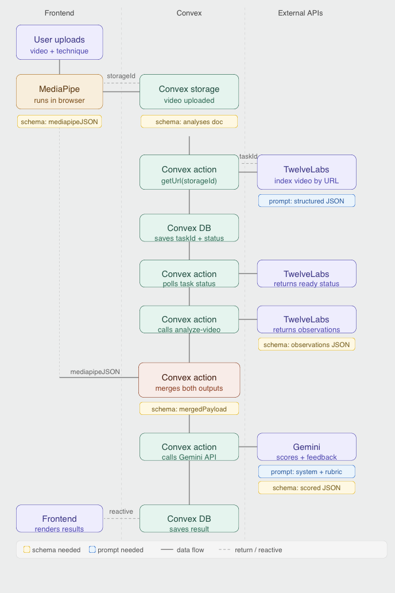

REST vs GraphQL for the Exercise Database API
The team chose REST for the initial release due to simpler caching and team familiarity. GraphQL will be reconsidered if query flexibility becomes a bottleneck.
The team chose REST for the initial release due to simpler caching and team familiarity. GraphQL will be reconsidered if query flexibility becomes a bottleneck.
Andy proposed a schema with tables for exercises, muscle groups, research citations (with DOI and study quality rating), and user workout logs. Approved with minor revisions to the citations table.
The team agreed on JWT-based auth with HTTP-only cookies for refresh tokens and short-lived access tokens.

Miscellaneous Comments / Questions / Concerns